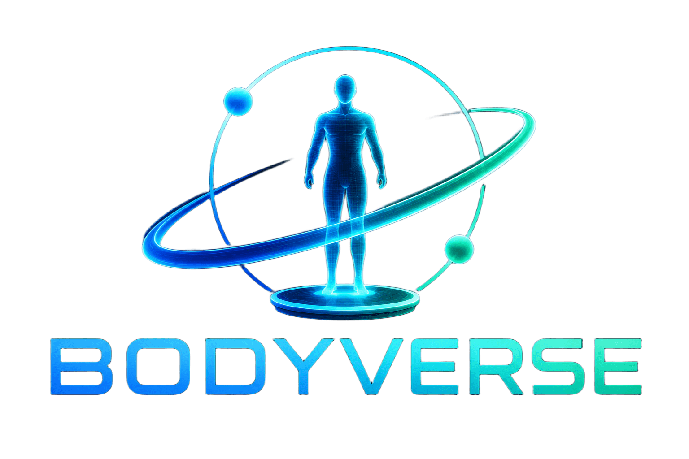

現在のみ
目標のみ
並列比較
▶ モーフ
— 保存先を選択 —
▾
📅 記録日
▾
💾 この日付で保存
👥 顧客管理
Three.js 読み込み中...
正面
側面
背面
上面
🔄 自動回転
📍 部位データ
🎯 達成度
⛶ 全画面
🎯 目標達成度
–
—
総合達成率
部位別体組成
✕
現在（骨格筋率・皮下脂肪率／対標準%）
目標（骨格筋率・皮下脂肪率／対標準%）
▸
✕ 閉じる
現在値
目標値
InBody
性別
♂ 男性
♀ 女性
基本情報
測定値（任意）
部位別体組成
目標値
部位別体組成（目標）
クイック目標
取込先
現在値へ
目標値へ
測定値入力
3Dに反映する
サンプルを読込む
クリア
現在値
目標値
InBody
顧客
⬆ 書出(JSON)
⬇ 取込(JSON)
⬇ CSV
📄 レポート出力
🗂 全レポートZIP
✕ 閉じる
顧客一覧
＋ 新規顧客
📊 サマリー
📋 記録一覧
📈 グラフ
🔮 シミュレーション
💡 アドバイス
👥 顧客情報